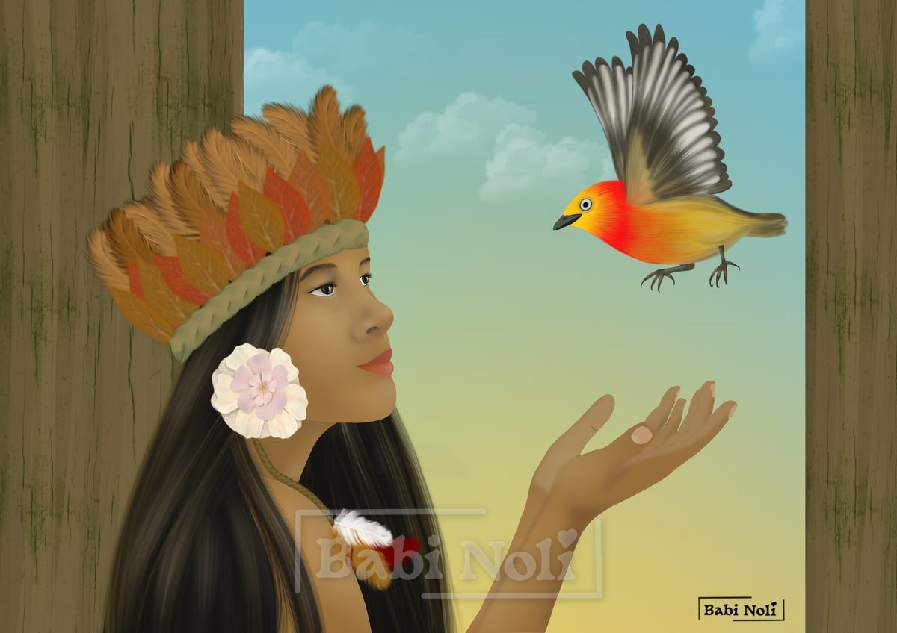

The Uirapuru

According to the legend, the Uirapuru is an enchanted bird. Its song brings luck to whoever hears it, and some say it also grants wishes.
But where does all this enchantment come from?
There are a few versions of this story, but the one that enchants me most is that of the young warrior and flute player and his love for the beautiful girl promised to the cacique.
I don’t know if you’ve noticed it too, but there’s a forbidden-love feel here, Romeo-and-Juliet style.
The young man was a cheerful lad who wandered the forest playing such beautiful music on his flute that even the birds stopped singing to listen to him.
One day he met a young woman who radiated beauty, but it was no ordinary beauty: it was a glow that came from within. They fell in love at once.
He began to visit the places she used to go. She spent hours listening to his stories and his music, and love and friendship grew between them naturally.
But what our Romeo didn’t know was that the sweet, enchanting young woman he had fallen head over heels for was promised to none other than the cacique of his village.
In case you don’t know what a cacique is: he is the leader of the village, respected by everyone.
Word reached the cacique that the music and the musician were enchanting his bride-to-be.
He gathered his men to teach our lovesick flute player a lesson.
Although he was a warrior, the flute player was better with a flute than with a bow and arrow. So he hastily said goodbye to his beloved and fled into the forest.
Terrified, he played his music, drawing all the birds and other animals of the forest close to him. With tears in his eyes and a broken heart, he begged the spirits of the forest to help him stay near his beloved.
Suddenly there was a flash of light, and the forest lit up. His wish had been granted: he was turned into a beautiful bird with bold colors and an unmistakable song.
That way, he could stay close to his beloved. Every morning he came to visit her, singing. She knew it was him, because he sang the same song he had sung to her so many, many times.
You must be wondering what happened to the cacique. Rumor has it that he went deep into the forest looking for the flute player and was never seen again. Others say it was Curupira’s punishment. But that’s a story for other legends.
Translated from Portuguese with AI. The original text is mine.
Did you know?
The uirapuru really exists. It is the uirapuru-da-guiana, a small Amazonian bird of the wren family, famous for having one of the most beautiful songs in the forest. The name comes from the Tupi wirapu'ru.
Versions of the legend disagree about the enchanted bird’s colors: some describe it as red and yellow with black wings; others as reddish-brown with darker wings.
The uirapuru’s song also became classical music. In 1917, the Brazilian composer Heitor Villa-Lobos began composing “Uirapuru — The Enchanted Little Bird”, a ballet inspired by the bird and its legend.